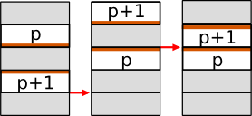
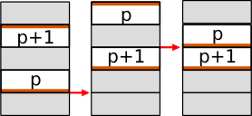
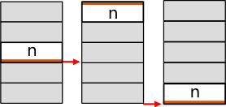
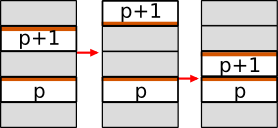
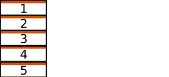
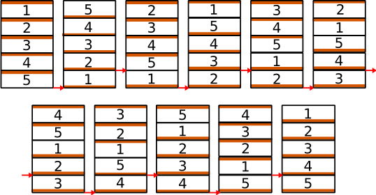

L'algorithme de Gates que nous avons vu dans l'exercice précédent trie rapidement les crêpes non brûlées en augmentant constamment la taille de sous-séquences triées dans la pile. Cela va bien plus vite que l'algorithme naïf qui déplace à chaque étape la plus grande crêpe en bas de la pile non-triée. L'algorithme de Gates trie une pile de n crêpes en moins de (5n + 5)/3 étapes dans le pire des cas là où l'algorithme naïf nécessite 2n étapes. L'algorithme de Gates est donc un tiers plus rapide dans le pire des cas.
Dans cet exercice, nous allons explorer une adaptation de la même idée aux crêpes brûlées. Cet algorithme fut tout d'abord publié par David X. Cohen et Manuel Blum. Quelques années après, David Cohen lançait avec un ami la série Futurama, remplie de blagues mathématiques. Décidément, ce petit problème de crêpes a inspiré des gens intéressant...
The Cohen's algorithm is slightly easier than the Gates' one since it distinguishes less cases. It relies on the notion of join: pancakes p and p+1 are joined when p lies rightside up just above p+1 rightside up, or when p+1 lies upside down just above p upside down. Once two pancakes are joined, they are never separated again: they behave as a single pancake, so each join makes the stack one pancake shorter. Likewise, the largest pancake lying rightside up at the bottom of the stack is joined to the plate. The stack is sorted after n joins. The world view marks each join between two pancakes with a small magenta dot. In the cases below, a "pancake" is thus a block of joined pancakes, and no flip ever cuts a block.
Cas 1 : Au moins une crêpe est à l'endroit dans la pile. Soit p la plus grande des crêpes à l'endroit. Notez que p + 1 est donc forcément à l'envers, à moins que p = n (auquel cas il n'y a pas de crêpe p + 1).



Cas 2 : Toutes les crêpes sont à l'envers. À nouveau, nous distinguons deux sous-cas.


Dans les cas 1 ou 2.a, nous pouvons fusionner deux crêpes qui doivent se suivre en deux opérations. Puisque nous devons réaliser n fusions de ce genre pour trier la pile, nous pouvons trier la pile en 2n opérations si le cas 2.b n'arrive jamais.
That case 2.b requires a very different handling as it is obviously not possible to achieve a join in only 2 flips. But fortunately, we can leverage the very specific setting of the stack in that case to provide the following algorithm. It sorts a stack in that exact configuration after exactly 2n steps. When that configuration arises after i joins, it applies to the n-i remaining blocks, the top (n-1) pancakes being all the blocks but the bottom one. The whole sort then takes 2i + 2(n-i) = 2n flips.
Répéter n fois
Inverser toute la pile de n crêpes
Inverser les (n-1) crêpes placées au sommet de la pile
Cela peut sembler un peu magique, mais cela fonctionne. Le dessin ci-dessous montre même comment.

Donc, dans tous les cas, l'algorithme de Cohen parvient à trier une pile de crêpes brûlées en 2n étapes, dans tous les cas. C'est mieux que l'algorithme naïf pour crêpes brûlées, qui nécessite 3n étapes.
isSelected() pour que vos affichages n'aient lieu que
pour le monde en cours d'affichage. En particulier, cela peut aider
d'afficher textuellement l'état du monde à chaque fois que vous entrez dans
la boucle principale.